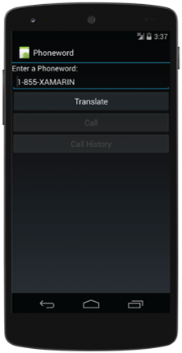
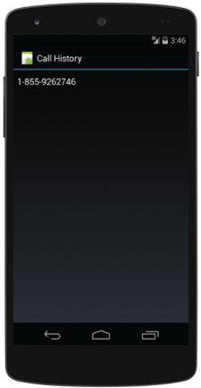
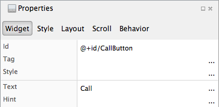
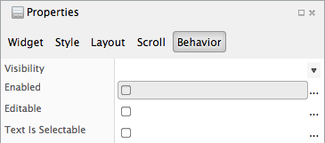
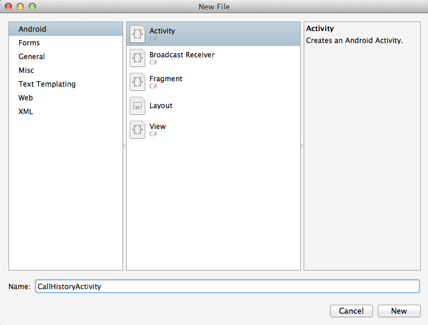
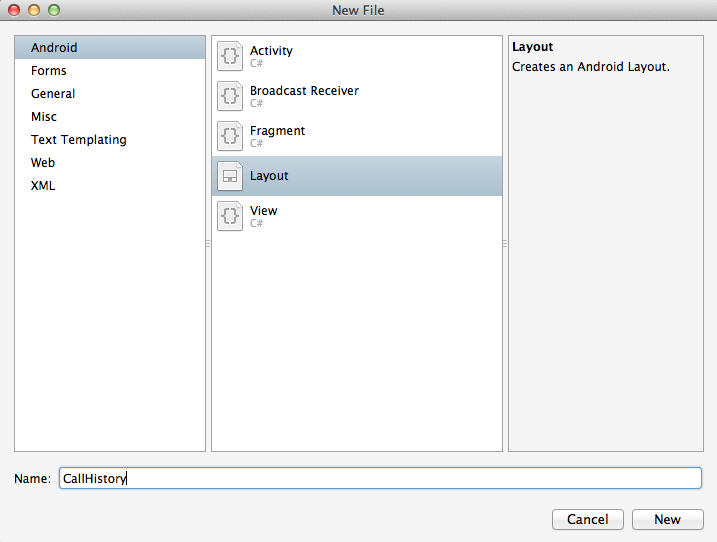
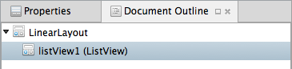

Exercise 4: Code two screens and navigate between them
Duration
20 minutes
Lab goals
In this lab, you will explore how to create multi-screen Android applications using Activities and Intents.
You will extend the Phoneword application to include a call history screen and implement navigation between
the main screen and the history screen. The call history will be displayed in a ListView using
an ArrayAdapter so you will also implement the basics of displaying a data collection.
The two screens are illustrated below.
|  |  |
Here is a high-level description of the required tasks for this lab:
- Create a CallHistoryActivity.
- Use a
ListViewand anArrayAdapterto display the list of phone numbers. - Add a button to the MainActivity that navigates to the CallHistoryActivity.
- Pass the list of past phone numbers from the MainActivity to the CallHistoryActivity.
Required assets
The provided Part 04 Resources folder contains a starter solution with the completed code from the previous exercise. You can begin with this starter code if you did not do the previous exercise or if you would like to start with a fresh project. The starter solution is in the Part4.Start folder. There is also a completed version of the lab in the Part4.Completed folder if you would like to check your work.
Exercise challenge
Use the information in the worksheet to accomplish the tasks outlined above. Alternatively, you can use the step-by-step instructions provided below to work through the exercise.
Steps
Below are the step-by-step instructions to add call history to the Phoneword application.
Maintaining a call history
Modify the Phoneword application so it keeps a list of all the numbers that have been dialed from the app.
- Open MainActivity.cs.
-
Add a field to the
MainActivityclass to store the dialed phone numbers. Use aSystem.Collections.Generics.List<string>and name it_phoneNumbers. Create an instance ofList<string>and assign it to your field. -
Modify your
CallButton.Clickhandler to add called numbers to the_phoneNumberslist.
Defining a resource string
You will need to use the string "Call History" in two places: as the text on a navigation button and as the label on an activity. Rather than hardcode the string in both places, you will define it as a resource and reference it as needed.
- Open Resources > values > Strings.xml.
-
Add a resource string with a
nameofcallHistoryand a value ofCall History. -
You will use the syntax
@string/callHistoryto lookup this string in later parts of this lab.
Adding navigation
The application currently has only MainActivity but it will eventually have both MainActivity and CallHistoryActivity. Here, we will add a button to MainActivity to let the user navigate to CallHistoryActivity (the CallHistoryActivity will be defined in the next section). As part of the navigation, MainActivity will pass the list of dialed numbers for CallHistoryActivity to display.
- Open Resources > layout > Main.axml.
-
Drag a
Buttonfrom the Toolbox and drop it below the CallButton. -
Use the Properties pad to set the button's
id to
@id+/CallHistoryButtonand its text to@string/callHistoryas shown below.  - While still using the Properties pad, switch to the Behavior tab and change the button's enabled property to false. 
- Open MainActivity.cs.
-
Locate the
OnCreatemethod. UseFindViewByIdto obtain a reference to the CallHistoryButton. - Enable the CallHistoryButton when an entry is added to the list of called numbers.
-
Subscribe a handler to the
Clickevent of the CallHistoryButton. Inside your handler, you will need to create anIntent, set the identity of the activity to which you would like to navigate, load the list of phone numbers, and then perform the navigation. The code to do this is shown below (note that CallHistoryActivity does not yet exist so the code will not compile until we define it in the next step).var intent = new Intent(this, typeof(CallHistoryActivity)); intent.PutStringArrayListExtra("phone_numbers", _phoneNumbers); StartActivity(intent);
Creating the call-history activity
Here we will add the CallHistoryActivity and verify the navigation is working.
- Open the New File dialog by right-clicking on the project in the Solution pad and choosing Add > New File.... Under Android, select the Activity template, enter a Name of CallHistoryActivity, and click New. See below. 
- An activity typically consists of UI and code-behind; however, the Activity template generates only the code-behind file. Add a corresponding UI layout file using the New File dialog. Right-click on the Resources > layout folder in the Solution pad, then choose Add > New File.... In the New File dialog, under Android, select the Layout template, give it a Name of CallHistory, then click New. See below. 
-
For each layout file, Android automatically generates a resource identifier based on the file name.
You will use this in the code-behind file to load the UI.
The one for CallHistory.axml will be named
Resource.Layout.CallHistory. If you want to see where this is defined, first Build the project, then open the file Resources > Resource.Designer.cs and locate the field namedCallHistory. - Open CallHistoryActivity.cs.
-
Locate the
OnCreatemethod. Add a call toSetContentViewand pass the layout identifier for your UI file. -
Run the app to test your work.
- Make sure the buttons are enabled correctly: the CallButton should become enabled after you translate a number and the CallHistory button should be enabled after you make a call.
- Click on the CallHistory button to navigate to the CallHistoryActivity.
- Click on the Android Back button to return to the MainActivity.
-
Click on the CallHistory again to return to the CallHistoryActivity.
Notice the text displayed at the top of the CallHistoryActivity. This is
taken from the
Labelproperty on theActivityAttributeapplied to theCallHistoryActivityclass. Open CallHistoryActivity.cs and locate where this value is set. -
Stop the app. Modify the
Labelso it uses thecallHistoryresource string. Run the app again and verify the correct label is displayed for the CallHistoryActivity.
Implementing the call-history screen
Here we will code the behavior of the CallHistoryActivity so it displays the list of previously-dialed phone numbers.
- Open Resources > layout > CallHistory.axml.
-
Drag a
ListViewfrom the Toolbox onto the CallHistory layout. -
Use the Document Outline window to select the
ListView.  -
Use the Properties Grid to give the
ListViewan id of@+id/PhoneNumberList.
- Open CallHistoryActivity.cs.
-
The MainActivity added the list of dialed numbers to the
Intent Extras to pass them to the CallHistoryActivity.
That Intent object is available to the CallHistoryActivity
via an inherited property named
Intent. Retrieve the list of numbers as shown below, notice how the retrieval uses the same key (phone_numbers) to retrieve the data as the MainActivity used to add it.public class CallHistoryActivity : Activity { protected override void OnCreate(Bundle bundle) { base.OnCreate(bundle); SetContentView(Resource.Layout.CallHistory); var phoneNumbers = Intent.GetStringArrayListExtra("phone_numbers") ?? new string[0]; } } -
The
ListViewclass uses an Adapter to prepare the elements of the collection for display. The adapter is responsible for creating the UI for each row. Our goal is to display a collection of strings - this case is so common that Android has built-in support to do it with very little code. We will use the standard layout fileAndroid.Resource.Layout.SimpleListItem1for the row template (it displays a single piece of text) and the standard adapterArrayAdapterto inflate the rows. Create the adapter as shown below.public class CallHistoryActivity : Activity { protected override void OnCreate(Bundle bundle) { base.OnCreate(bundle); SetContentView(Resource.Layout.CallHistory); var phoneNumbers = Intent.GetStringArrayListExtra("phone_numbers") ?? new string[0]; var adapter = new ArrayAdapter<string>(this, Android.Resource.Layout.SimpleListItem1, phoneNumbers); } } -
Use
FindViewByIdto obtain a reference to theListView, then set itsAdapterproperty as shown below.public class CallHistoryActivity : Activity { protected override void OnCreate(Bundle bundle) { base.OnCreate(bundle); SetContentView(Resource.Layout.CallHistory); var phoneNumbers = Intent.GetStringArrayListExtra("phone_numbers") ?? new string[0]; var adapter = new ArrayAdapter<string>(this, Android.Resource.Layout.SimpleListItem1, phoneNumbers); var list = FindViewById<ListView>(Resource.Id.PhoneNumberList); list.Adapter = adapter; } } - Run the app to test your work. The CallHistoryActivity should now display the list of dialed numbers.
Summary
This lab built a multi-screen Xamarin.Android application. The lab introduced the concepts of
Activity and Intent. It also showed a simple case of displaying
a collection using a ListView.